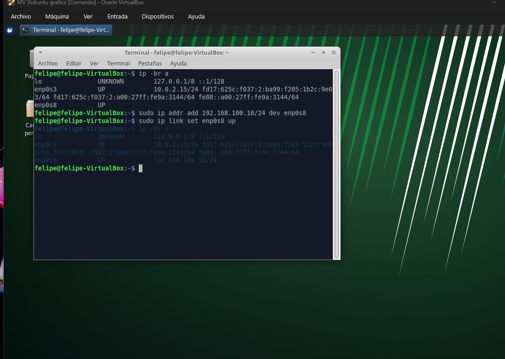
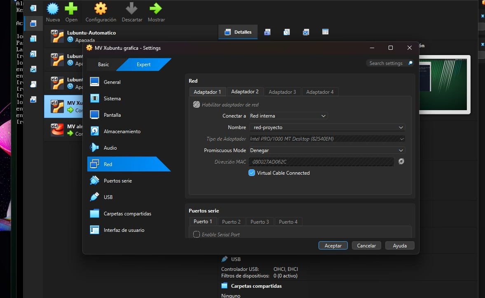
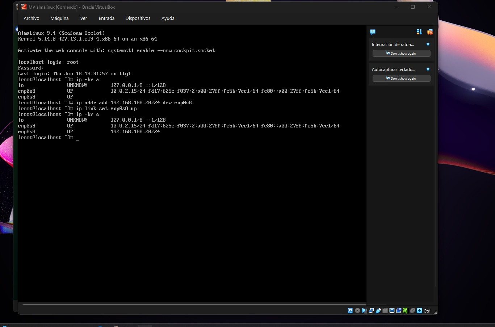
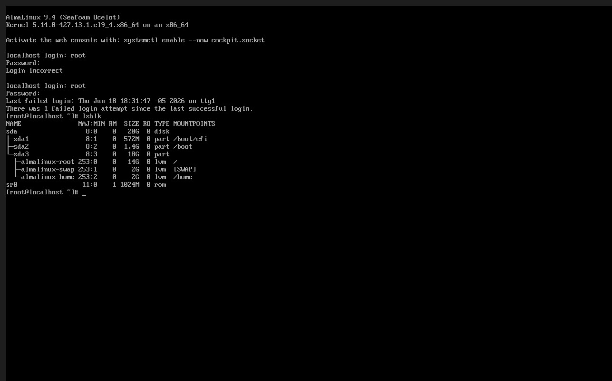
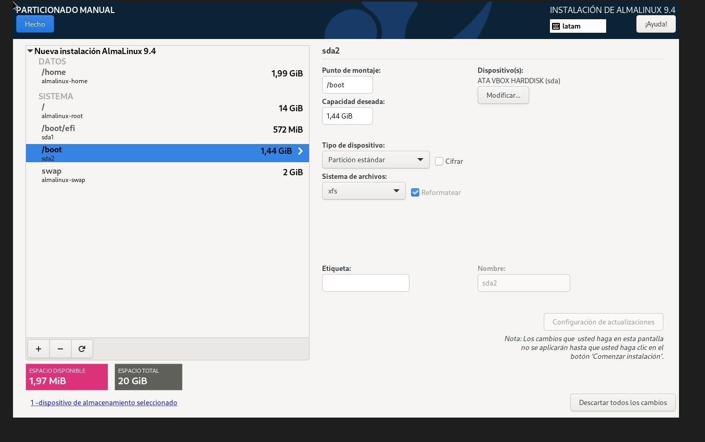
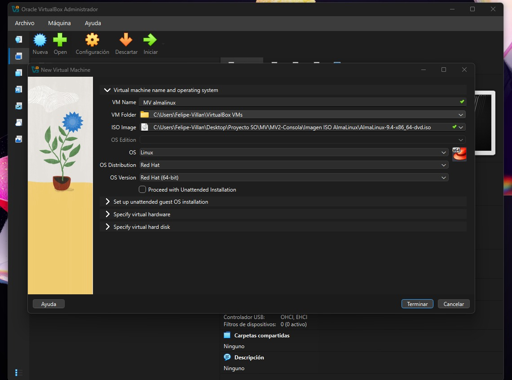
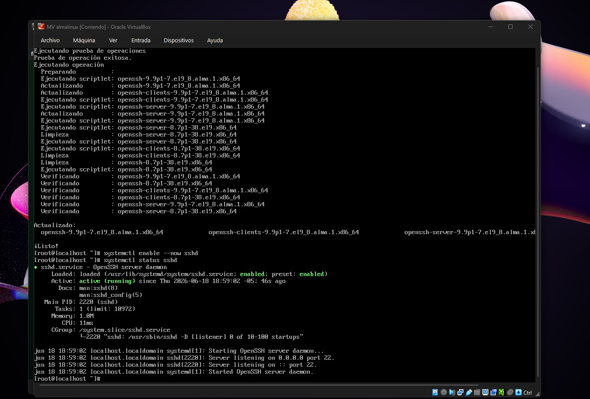
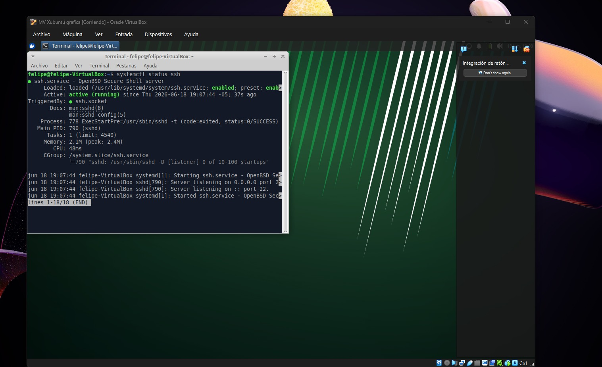

Sistemas Operativos 2026
Universidad del Valle
Grupo 8
Máquinas Virtuales
Contenedores Docker
Réplicas Kubernetes
Integrantes
Integrante del proyecto.
Integrante del proyecto.
Integrante del proyecto.
Integrante del proyecto.
Xubuntu 24.04 y AlmaLinux 9.4
Contenedores y Docker Compose
Frontend Web
Backend HTTP
Minikube y Escalado
Repositorio y documentación
Se implementaron dos máquinas virtuales Linux utilizando VirtualBox.








Instalado en Xubuntu.
Nginx sirviendo contenido HTML.
Servidor Python en puerto 5000.
Orquestación de servicios.
Cluster local Kubernetes.
Gestión de Pods.
Acceso a los servicios.
3 Réplicas activas.
En esta sección se presentarán los aprendizajes obtenidos durante el desarrollo del proyecto.
También se describirán las dificultades encontradas y las soluciones implementadas por el equipo.